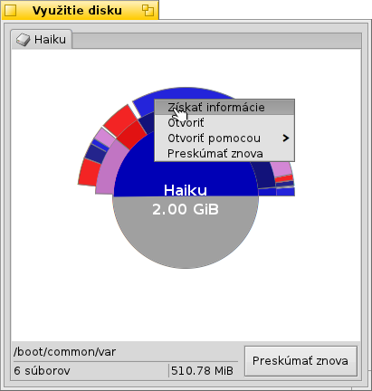

Slovenčina
Slovenčina Français
Français Deutsch
Deutsch Italiano
Italiano Русский
Русский Español
Español Svenska
Svenska 日本語
日本語 Українська
Українська 中文 ［中文］
中文 ［中文］ Português
Português Suomi
Suomi English
English Využitie disku
Využitie disku
| Panel: | ||
| Umiestnenie: | /boot/system/apps/DiskUsage | |
| Nastavenia: | ~/config/settings/DiskUsage |
Využitie disku graficky zobrazuje ako sa využíva miesto na vašich diskoch.
Užitočný nástroj zodpovedajúci otázku „Kam sa podelo miesto na mojom disku?“.

Sústredné kruhy reprezentujú rozličné úrovne v hierarchii súborového systému. Hore, kruh v strede predstavuje priečinok /boot/home/. Každý segment prstenca tesne mimo toho kruhu sú súbory alebo priečinky pod /boot/home/. Každý segment ďalej mimo je o úroveň ďalej v hierarchii súborov. Možno budete musieť zväčšiť okno, aby sa vám dobre zobrazili veľmi hlboko zanorené priečinky.
Nad obrázkom je vyskakovacie menu, ktoré vám dovolí prepnúť medzi pripojenými diskami. Predtým, než bude možné zobraziť využitie disku, musí ho program preskúmať. Keďže toto môže pri veľkých diskoch chvíľu trvať, môžete prehliadať iný disk, zatiaľ čo prieskum prebieha na pozadí.
- Ak je grafická reprezentácia súboru alebo priečinku menej ako alebo približne 2° kruhu, nezobrazí sa.
- Počet súborov uvedených pre priečinok zahŕňa súbory v podpriečinkoch. Priečinok sa ráta ako súbor.
- Využitie disku ignoruje symbolické odkazy.
Počas presúvania kurzora ponad segmenty sa dolu, v stavovej lište zobrazujú informácie o súbore alebo priečinku pod kurzorom.
Kliknutie pravým tlačidlom myši na segment poskytuje kontextové menu s položkami , (pomocou Trackera), inej vhodnej aplikácie alebo ten určitý priečinok.
Ľavé kliknutie na segment spraví z toho súboru/priečinku stredný kruh.
Ľavé kliknutie na stredný kruh vás posunie hore o jednu úroveň.
Pretiahnutím súboru alebo priečinka z Využitia disku do inej aplikácie, Plochu alebo do iného okna Trackera ich môžete skopírovať. Naopak, pretiahnutím disku alebo priečinka do okna Využitia disku priblížite priamo danú položku, z ktorej spraví stredný kruh.